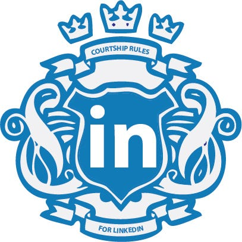

LinkedIn Is Just Like Dating: Courtship Rules
If you want to get ahead, instead of just get some.
An unofficial guide to get ahead with LinkedIn 🔮

Now that LinkedIn has surpassed the +300 million member club, this is no longer just a resume site, it is a behemoth content platform and dating site for professionals.
Courtship comes in many forms, linking up is no different. My two cents on being proper.
Seriously? If I get another one of these form fed requests on LinkedIn, I’m going to cut somebody. I don’t know who, but someone going to get the paper cut, real bad.
Hi Khayyam
I’d like to connect with you on LinkedIn.
Random Guy
Chief Never Met You Before at No Clue Company.
Why is it so hard to be a professional and state your intention for why you want to connect? Did we meet somewhere? Do you need something from me? Or, better yet, how can I help you? It’s taken the rapport out of the game; it’s cold.
The simple ability to click one button and instantly connect makes it easy, at the same time sleazy. I don’t go out on dates and ask if I can put my hand down peoples pants before we’ve even sat down for dinner. Inapropiado! That’s what is happening every time you’re lazy and just click ‘Connect’ on LinkedIn. You’re a dirty pervert! I don’t know you!
What happened to the art of the romance? If love is the universal sought out catalyst to happiness, with ease it will pluck strings the world over. The song that plays is called, Courtship. Perhaps we’re all in need of a quick refresher in the art. Let me indulge you.
01. Honestly stating your intentions from the get go.
Hello <insert name>
Was reading an article in <publication name and possible link> and was very drawn to your views on <such and such topic>. Would love to connect and discuss further if you’re amenable to this.
Thanks in advance <insert name again>!
Khayyam
Simple. Reference stated as to how I found them, reason given for the connection and most importantly, asking permission.
02. The concept of asking permission for things.
If you ask, you shall receive. The reason you’re reaching out to connect with someone is mainly to ask their permission to be associated with you professionally. That means being able to attest to your skills and attributes. Can’t do that if the only sense of knowing you is that “you would like to add me to your LinkedIn network.” Need more. Ask for it.
03. Rule of 20.
I know a guy, who knows a guy, who knows you. I’d like to add you to my trusted LinkedIn network. Rule of 20 comes in to play. The Rule of 20 is that if you don’t know 20+ commonly shared acquaintances, then you probably shouldn’t be connecting. Unless, of course, they are the solution to your problem. Then, you roll the dice.
04. Sex is not on the menu.
Don’t attempt to sell me something off the get go. You’re too handsy feely. Pass.
05. Punctuality.
Both in time and forging the initial letter. Say what you’re going to do and then do it, on time.
06. Dress to impress.
Fix up your profile and select an appropriate profile pic. After all, it is a dating site, remember? Tell a story instead of listing mundane bullet lists. Add some pictures and accessorize! Consider your profile as elegant evening attire for a red carpet gala. Update your threads and flaunt your profile. Peacock.
07. A gesture in gifting on the first date.
What can you gift them in that initial connection request? Your time and expertise. Be in service to them from the beginning. You’ll only get if you’re willing to give.
08. May I have this dance?
Check out their profile and then see if they check out yours! It reminds me of those romantic scenes out of a Bollywood movie where the boy and the girl chase each other around a tree. <swoon>. Tag! You’re it. This might be the foreplay you’re looking for to create the mood for connection. Send a well crafted invitation now. Et voila! You’re connected.
Most likelihood, you’ll not receive a response to your invitation, rather, the acceptance of the connection. Follow up with a short thank you and continue to push your intentions forward. If you ask nicely, you’ll have a chance to prove yourself on the dance floor.
09. Pick up the tab.
On the first date, always pick up the tab. You’ve connected with them online. You’ve formed a connection outside and meet finally. Do the good thing and pick up the tab, unless of course you’re a startup and they’ve got an expense account. And if that is the case, make sure they’ve invested their time wisely.
10. Being clear about when you’re “going steady.”
Still in business! A monogamous relationship does have its benefits. Loyal, steady and continually adding worth to one another. Keep the conversation rolling, this is how shit happens!
11. Romantic gestures like writing poems.
Take notice of the small things. A quick thank you note, an intriguing introduction to a like mind or a link to an astounding article. Small things add up. Never forget the romance.
That should get you over the hump and begin to create stronger ties to those lucky people connecting with you now. Courtship is an art form continually evolving. Mind your P’s and Q’s and it’ll open doors like no other. Take a few moments and craft a good impression. Your career depends on it.
Thanks for taking the time to read. Share if you think someone would benefit from learning a thing or two about LinkedIn courtship.
Originally posted on: LinkedIn